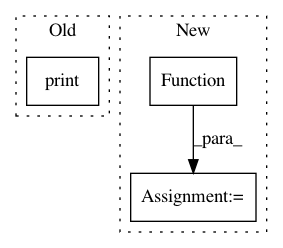

e0c9d018aca7bf05486c385484d5ed1c37bac423,pynets/diffconnectometry.py,,coreg_WM_mask_to_diff,#Any#Any#,151
Before Change
flirt.run()
args = "-bin"
maths = fsl.ImageMaths(in_file=out_file, op_string=args, out_file=out_file)
print("\nBinarizing WM mask...")
os.system(maths.cmdline)
return out_file
After Change
os.system(maths.cmdline)
return out_file
bin_wm = pe.Node(niu.Function(input_names=["out_file"], output_names=["out_file"],
function=bin_wm), name="bin_wm_node")
wm_transforms_wf.connect([(inputnode, flirt, [("dwi_infile", "reference"), ("wm_mask_loc", "in_file"),
("out_file", "out_file"), ("mat_file", "in_matrix_file")]),
(flirt, bin_wm, [("out_file", "out_file")])
In pattern: SUPERPATTERN
Frequency: 4
Non-data size: 3
Instances
Project Name: dPys/PyNets
Commit Name: e0c9d018aca7bf05486c385484d5ed1c37bac423
Time: 2018-10-13
Author: dpisner@utexas.edu
File Name: pynets/diffconnectometry.py
Class Name:
Method Name: coreg_WM_mask_to_diff
Project Name: pymanopt/pymanopt
Commit Name: 1cb07ccf2f2dfa4507a4740d45a639178b148aca
Time: 2020-01-26
Author: niklas.koep@gmail.com
File Name: pymanopt/core/problem.py
Class Name: Problem
Method Name: egrad
Project Name: dPys/PyNets
Commit Name: e0c9d018aca7bf05486c385484d5ed1c37bac423
Time: 2018-10-13
Author: dpisner@utexas.edu
File Name: pynets/diffconnectometry.py
Class Name:
Method Name: coreg_mask_to_diff
Project Name: pymanopt/pymanopt
Commit Name: 1cb07ccf2f2dfa4507a4740d45a639178b148aca
Time: 2020-01-26
Author: niklas.koep@gmail.com
File Name: pymanopt/core/problem.py
Class Name: Problem
Method Name: ehess